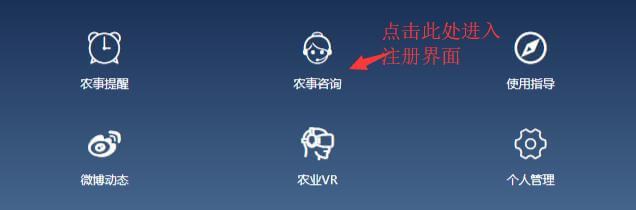
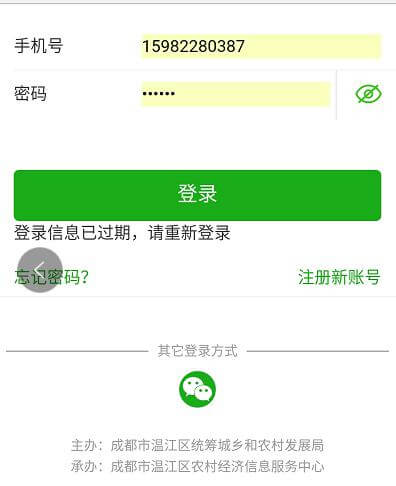
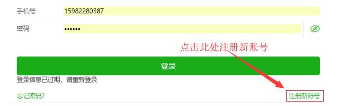
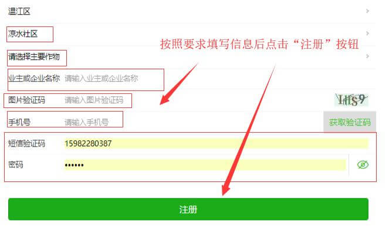
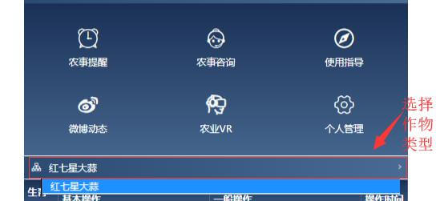
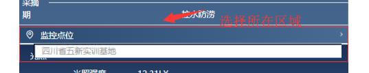
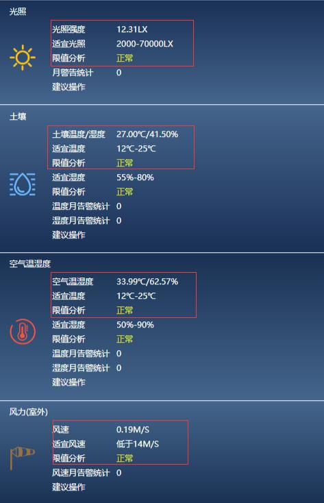
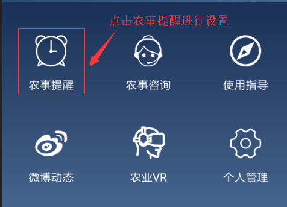
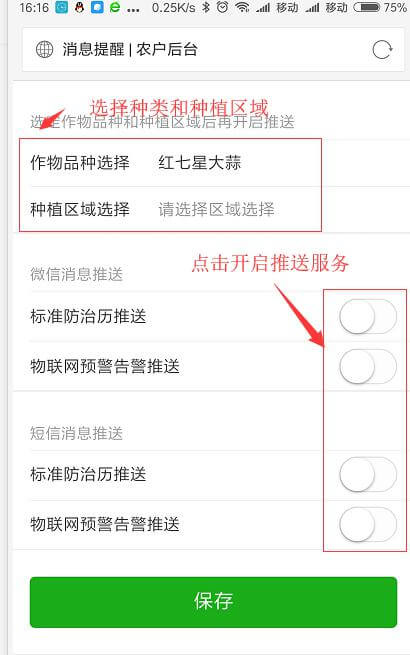

平台介绍
温江智慧农业公众服务平台作为温江智慧农业的社会化服务窗口，为温江种植户、企业、合作社提供农业产业的农事信息服务和专家咨询服务。为了获得更为贴心的农事信息和专家服务，请注册！
如何登陆或注册？
第一步：点击首页“农事咨询”如下图：
第二步：出现系统登录页面，输入用户帐号密码，点击登录按钮即可登录，如下图：
第二步：进入注册界面后点击“注册新账号”进行账号注册
第三步：按照要求填写信息并点击注册按钮进行注册
如何获取农事提醒信息？
第一步，在首页请选择您种植的作物（目前仅包含基于大蒜生长模型的物联网联动参数）
第二步，选择您种植所在地的区域
第三步，查看目前的物联网参数和适宜
第三步，看不懂物联网参数不要紧，点击直接订阅农事操作
选择作物品种和种植区域，再点击开启需要的推送服务，单击保存，即可获得系统自动推送的农事服务和物联网告警服务。
